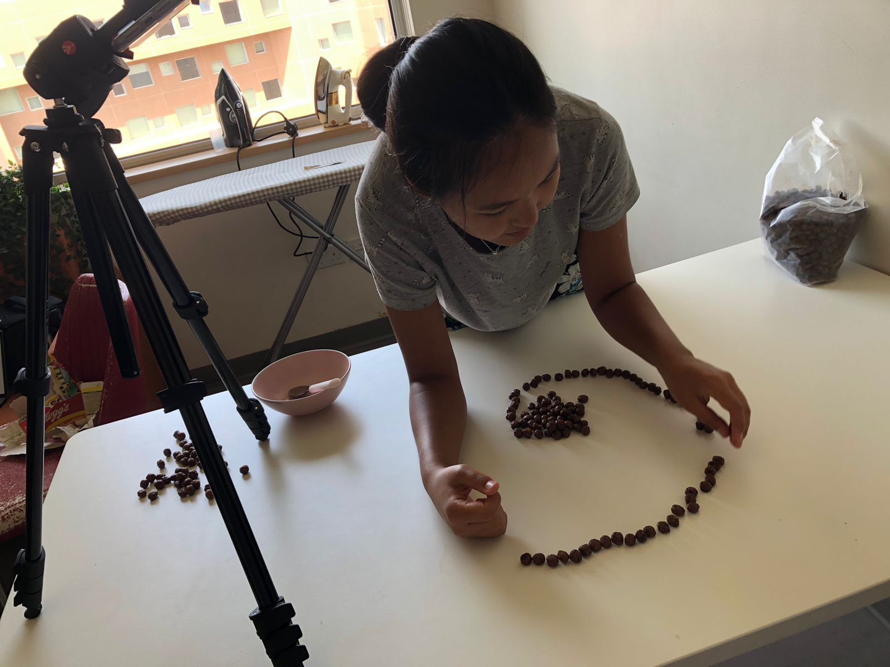

The technique of merging many photos together to create a simple animation was used for filming this video. It creates the feeling that objects move themselves.
Hover the image to see it closer
Placing more photos in one time frame allowed a higher-quality and more interactive video. Therefore, even when the position of a single cereal changed, a photo was made. Can you guess how many photos were made for this short video?
Its 114 photos for 15 seconds! This is about 8 photos in one second. Scroll down if you want to see all images that were used for the 1-minute video. Give rest to your eyes by clicking the button.